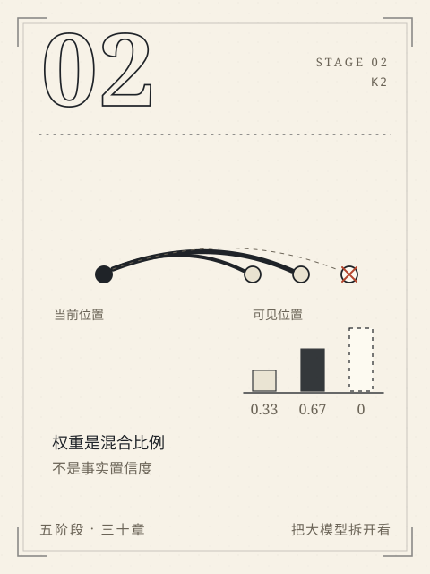

阶段 2 / K2
S2 懂原理
把“会”拆到能手算。
解释并复算生成、向量、注意力与参数更新，分清输入变化和训练。
从这里开始，模型不再是一个会说话的黑箱。一句话被切成片段，片段变成向量，向量在注意力里互相查看，最后一层层拼成下一个片段的概率。每一步都有形状、有数字，也有可以被推翻的假设。
六章不要求你先会微积分。分数、矩阵、斜率、链式法则会在需要的地方补齐。真正要带走的是三种能力：复算一个数，指出一个比喻的边界，以及在结果变化时说出是哪一步变了。
本阶段章节
- C05一句话怎样逐步生成
从分数到 softmax，再到一次采样和追加，手算一句话怎样被逐步生成。
- C06一串数字怎样表示文字
用坐标、点积和余弦相似度判断“两个向量很像”到底在说什么。
- C07注意力到底计算了什么
把一次因果注意力拆成投影、打分、遮挡、softmax 和加权汇总五步。
- C08怎样拼成一个 Transformer
沿一个位置走完双头注意力的拼接与输出投影，并标出玩具模型缺了哪些部件。
- C09训练为什么能改变预测
用负对数、梯度和一次参数更新，区分“这次答对了”和“模型学会了”。
- C10从续写到助手
把预训练、指令微调、偏好优化和聊天模板分开，理解续写怎样变成助手。